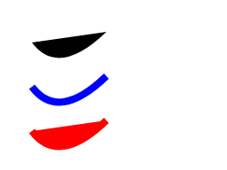

Path Overview
Path contains Lines and Curves which can be stroked or filled.
Contour is composed of a series of connected Lines and Curves. Path
may contain zero, one, or more Contours. Each Line and Curve are described by
Verb, list of Point, and optional
Path_Conic_Weight.
Each pair of connected Lines and Curves share common Point; for
instance, Path containing two connected Lines are described the
Path_Verb sequence: Path.kMove, Path.kLine,
Path.kLine; and a Point sequence with three entries, sharing the
middle entry as the end of the first Line and the start of the second Line.
Path components Arc, Rect, Round_Rect, Circle, and Oval are
composed of Lines and Curves with as many Verbs and Points required for an exact
description. Once added to Path, these components may lose their
identity; although Path can be inspected to determine if it
describes a single Rect, Oval, Round_Rect, and so on.
Example:
paint = skia.Paint(AntiAlias=True)
path = skia.Path()
path.moveTo(124, 108)
path.lineTo(172, 24)
path.addCircle(50, 50, 30)
path.moveTo(36, 148)
path.quadTo(66, 188, 120, 136)
canvas.drawPath(path, paint)
paint.setStyle(skia.Paint.kStroke_Style);
paint.setColor(skia.ColorBLUE)
paint.setStrokeWidth(3)
canvas.drawPath(path, paint)
Path contains three Contours: Line, Circle, and Quad. Line is stroked but not filled. Circle is stroked and filled; Circle stroke forms a loop. Quad is stroked and filled, but since it is not closed, Quad does not stroke a loop.

Path contains a Path_Fill_Type which determines whether overlapping Contours form fills or holes. Path_Fill_Type also determines whether area inside or outside Lines and Curves is filled:
paint = skia.Paint(AntiAlias=True)
path = skia.Path()
path.moveTo(36, 48)
path.quadTo(66, 88, 120, 36)
canvas.drawPath(path, paint)
paint.setStyle(skia.Paint.kStroke_Style)
paint.setColor(skia.ColorBLUE)
paint.setStrokeWidth(8)
canvas.translate(0, 50)
canvas.drawPath(path, paint)
paint.setStyle(skia.Paint.kStrokeAndFill_Style)
paint.setColor(skia.ColorRED)
canvas.translate(0, 50)
canvas.drawPath(path, paint)
Path is drawn filled, then stroked, then stroked and filled.
Path contents are never shared. Copying Path by value
effectively creates a new Path independent of the original.
Internally, the copy does not duplicate its contents until it is edited, to
reduce memory use and improve performance.
Contour contains one or more Verbs, and as many Points as are required to
satisfy Path_Verb_Array. First Path_Verb in Path is always
PathVerb.kMove; each PathVerb.kMove that follows starts a
new Contour.
Example:
font = skia.Font()
paint = skia.Paint(AntiAlias=True)
canvas.drawString("1st contour", 150, 100, font, paint)
canvas.drawString("2nd contour", 130, 160, font, paint)
canvas.drawString("3rd contour", 40, 30, font, paint)
paint.setStyle(skia.Paint.kStroke_Style)
path = skia.Path()
path.moveTo(124, 108)
path.lineTo(172, 24)
path.moveTo(36, 148)
path.quadTo(66, 188, 120, 136)
path.close()
path.conicTo(70, 20, 110, 40, 0.6)
canvas.drawPath(path, paint)
Each moveTo() starts a new Contour, and content after
close() also starts a new Contour. Since conicTo()
is not preceded by moveTo(), the first Point of the third Contour
starts at the last Point of the second Contour.
If final PathVerb in Contour is kClose, Line
connects Path_Last_Point in Contour with first Point. A closed Contour, stroked,
draws Paint_Stroke_Join at Path_Last_Point and first Point. Without
kClose as final Verb, Path_Last_Point and first Point are
not connected; Contour remains open. An open Contour, stroked, draws
Paint_Stroke_Cap at Path_Last_Point and first Point.
Example:
paint = skia.Paint(
AntiAlias=True,
Style=skia.Paint.kStroke_Style,
StrokeWidth=8)
path = skia.Path()
path.moveTo(36, 48)
path.quadTo(66, 88, 120, 36)
canvas.drawPath(path, paint)
path.close()
canvas.translate(0, 50)
canvas.drawPath(path, paint)
Path is drawn stroked, with an open Contour and a closed Contour.

Contour length is distance traveled from first Point to Path_Last_Point, plus, if Contour is closed, distance from Path_Last_Point to first Point. Even if Contour length is zero, stroked Lines are drawn if Paint_Stroke_Cap makes them visible.
Example:
paint = skia.Paint(
AntiAlias=True,
Style=skia.Paint.kStroke_Style,
StrokeWidth=8,
StrokeCap=skia.Paint.kRound_Cap)
path = skia.Path()
path.moveTo(36, 48)
path.lineTo(36, 48)
canvas.drawPath(path, paint)
path.reset()
paint.setStrokeCap(skia.Paint.kSquare_Cap)
path.moveTo(56, 48)
path.close()
canvas.drawPath(path, paint)